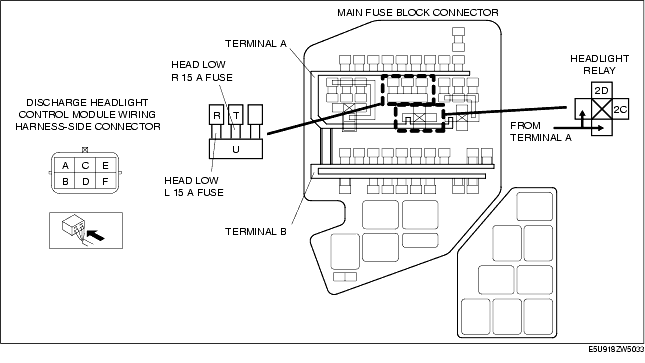

Workshop Manual ➭ BODY & ACCESSORIES ➭ LIGHTING SYSTEMS ➭ DISCHARGE HEADLIGHT SYSTEM INSPECTION
DISCHARGE HEADLIGHT SYSTEM INSPECTION
id091800805400
{: #wp1059776}
Discharge headlight inoperative
Warning
• Incorrect servicing of the discharge headlights could result in electrical shock. Before servicing the discharge headlights, always refer to the discharge headlight service warnings. (See DISCHARGE HEADLIGHT SERVICE WARNINGS.)
Terminal layout

Inspection procedure
|
STEP {: #wp1059953} |
INSPECTION {: #wp1059955} |
ACTION {: #wp1059959} |
|
|---|---|---|---|
|
1 {: #wp1059847} |
INSPECT POWER SUPPLY CIRCUIT OF DISCHARGE HEADLIGHT CONTROL MODULE • Is the voltage } • Disconnect the discharge headlight control module connector. {: #wp1060061} • Turn the headlight switch to the HEADLIGHT (LO) position. {: #wp1060075} • Measure the voltage at discharge headlight control module terminal C (wiring harness-side). {: #wp1060085approx. 12 V? {: #wp1060096} |
Yes {: #wp1059905} |
Go to Step 6. {: #wp1059908} |
|
No {: #wp1059988} |
Go to the next step. {: #wp1059991} |
||
|
2 {: #wp1059995} |
INSPECT FUSE} • Turn the headlight switch to the OFF position. {: #wp1060149} • Remove the HEAD LOW R 15 A fuse (RH) or HEAD LOW L 15 A fuse (LH). {: #wp1060163} • Inspect the fuses. {: #wp1060173} • Are the fuses normal? {: #wp1060183 |
Yes {: #wp1060001} |
Go to the next step. {: #wp1060004} |
|
No {: #wp1060014} |
Replace the fuse. {: #wp1060017} |
||
|
3 {: #wp1060021} |
INSPECT HEADLIGHT RELAY • Remove the headlight relay. (See RELAY LOCATION.) {: #wp1060242} • Inspect the headlight relay. (See RELAY INSPECTION.) {: #wp1060264} • Is the headlight relay normal? {: #wp1060282} |
Yes {: #wp1060027} |
Go to the next step. {: #wp1060030} |
|
No {: #wp1060217} |
Replace the headlight relay. (See RELAY LOCATION.) {: #wp1060220} |
||
|
4 {: #wp1060318} |
INSPECT LIGHT SWITCH • Inspect the light switch. (See LIGHT SWITCH INSPECTION.) {: #wp1060388} • Is the light switch normal? {: #wp1060410} |
Yes {: #wp1060324} |
Go to the next step. {: #wp1060327} |
|
No {: #wp1060345} |
Replace the light switch. (See LIGHT SWITCH REMOVAL/INSTALLATION.) {: #wp1060348} |
||
|
5 {: #wp1060446} |
INSPECT WIRING HARNESS BETWEEN BATTERY AND DISCHARGE HEADLIGHT CONTROL MODULE • Disconnect the negative battery cable. (See } • Remove the battery cover. {: #wp1060532BATTERY REMOVAL/INSTALLATION [L8, LF].) {: #wp1060546} • Inspect for continuity between the following terminals: {: #wp1060564} - Battery (positive terminal) and headlight relay (main fuse block terminal A) {: #wp1060574}- Headlight relay terminal 2C and HEAD LOW R 15 A fuse (RH) terminal U {: #wp1060588}- Headlight relay terminal 2C and HEAD LOW L 15 A fuse (LH) terminal U {: #wp1060598}- HEAD LOW R 15 A fuse (RH) terminal T and discharge headlight control module terminal C {: #wp1060608}- HEAD LOW L 15 A fuse (LH) terminal R and discharge headlight control module terminal C {: #wp1060618} • Are the wiring harnesses normal? {: #wp1060628} |
Yes {: #wp1060452} |
Go to the next step. {: #wp1060455} |
|
No {: #wp1060477} |
Replace the related wiring harness. {: #wp1060480} |
||
|
6 {: #wp1060656} |
INSPECT WIRING HARNESS BETWEEN DISCHARGE HEADLIGHT CONTROL MODULE AND GROUND • Inspect the headlight relay. (See } • Inspect wiring harness between discharge headlight control module terminal F and ground for following: {: #wp1060750} - Short to power supply {: #wp1060764}- Open circuit {: #wp1060778RELAY INSPECTION.) {: #wp1060788} • Is the wiring harness normal? {: #wp1060806} |
Yes {: #wp1060662} |
Go to the next step. {: #wp1060665} |
|
No {: #wp1060689} |
Replace the related wiring harness. {: #wp1060692} |
||
|
7 {: #wp1060834} |
VERIFY WHETHER MALFUNCTION IS IN DISCHARGE HEADLIGHT BULB OR DISCHARGE HEADLIGHT CONTROL UNIT • Install any other discharge headlight low bulb (previously verified as illumination normally). (See HEADLIGHT BULB REMOVAL/INSTALLATION.) {: #wp1060936} • Connect the discharge headlight control module connector. {: #wp1060958} • Turn the headlight switch to the HEADLIGHT (LO) position. {: #wp1060968} • Does the headlight (low-beam) illuminate? {: #wp1060978} |
Yes {: #wp1060840} |
System inspection completed. {: #wp1060843} |
|
No {: #wp1060869} |
Replace the front combination light. (See FRONT COMBINATION LIGHT REMOVAL/INSTALLATION.) {: #wp1060872} |
||